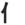

|  | personleft |
| NIN, JIN |
NINjas wear JEANS on casual friday. It is kind of awkward at first, but you'll get used to it. |
| ひと |
person
★★★★★ |
| xxx人 |
person from xxx ★★★★★ KUN ONSUF SUFFIX meaning 'person from XXX country.' AmerikaJIN, FranceJIN, etc. |
| 人気 |
famous
★★★★☆
famous - usually used like this: 人気 が ある！ |
| 人間 |
human
★★★★☆
FP
|
| 人生 |
life (in general)
★★★☆☆
Life, as in someone's entire life, or life in general:. "He lived a quiet life." "Life is a bitch." "Life span." |
| 名人 |
an expert
★★★☆☆
|
| 大人 |
adult
★★★☆☆
FP
adult, as opposed to minor, not as opposed to 'with clothes on.' |
| 人口 | |
| 目上の人 のひと |
higher person
★☆☆☆☆
KUNKUN
someone who out-ranks you - at work, school, or in society. |
| 人食い xxx |
a man-eating XXX.
★☆☆☆☆
|
| Meaning | Hint | Radical | |
|---|---|---|---|
| 入 | put/go in | TOP FACES LEFT | |
| 人 | person | TOP FACES RIGHT |
The top of 'put in' faces left and - at least in larger fonts - the top little yoink of 'person' faces right.
That's because most people are RIGHT-wing bastards, and the bullets of the LEFTIST, glorious people's revolution will enter the LEFT side of their heads. !Viva Mao!
|
bureaucrat
官僚 役人 |
|
expert
玄人 達人 名人 |
|
friend
友達 友人 |
|
girl, woman, female
女性 女の人 嬢 乙女 女の子 女子 |
|
human
人類 人情 人間 |
|
life
人生 命 生命 |
|
man-made
人工 人造 |
|
novice
素人 初心者 未熟 |
|
old person
年寄り 老人 年をとった 年輩 |
|
one person
一人 独り |
|
plurals
~等 あいつ等 彼等 奴等 達 仲間達 人達 子供達 |
|
popular
人気がある もてる ちやほや |
|
race or ethnic group
人種 民族 |
|
soldier
軍人 兵士 |
 KANJIDAMAGE
KANJIDAMAGE
 Number
61
Number
61